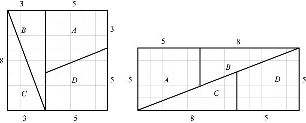
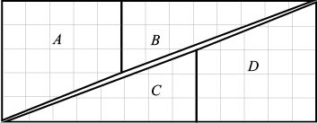

在本章开头，我为大家介绍了一个魔术，下面我再介绍一个根据几何原理设计的魔术。勾股定理的大多数证明方法都是在保持面积不变的前提下重新排列几何图形的各个组成部分，从而得到一个不同的图形。先请大家思考一个悖论。如下图所示，把一个8×8的正方形分割成4块（每块的边长都是3、5或8的斐波那契数列中的数字），然后重新排列，拼成一个5×13的矩形。（大家不妨自己动手试一试！）但是，第一个图形的面积是8×8 = 64，第二个图形的面积却是5×13 = 65，这怎么可能？问题出在哪里呢？

奥秘就在那个5×13矩形的对角“线”上，它其实不是直线。例如，图中三角形C的斜边斜率为3/8 = 0.375（横坐标增加了8，纵坐标增加了3），而图形D（梯形）的斜边斜率为2/5 = 0.4（横坐标增加了5，纵坐标增加了2）。由于两个斜边的斜率不同，因此它们不会构成一条直线。此外，梯形A与三角形B也存在同样的情况。仔细观察下图中的三角形，就会发现在两条“近似对角线”之间，多出了一点儿面积。这些面积分布在一个很长的区域内，大小正好是一个单位。

我们在本章推导出关于三角形、正方形、矩形和其他多边形的众多属性，这些属性都建立在直线的基础之上。如果我们研究的是圆和其他曲线类图形，就需要借助三角学、微积分等更复杂的几何概念，也无法回避一个充满吸引力的数字——π。
[1] 1英尺≈0.304 8米。——编者注
[2] 1英寸≈2.54厘米。——编者注